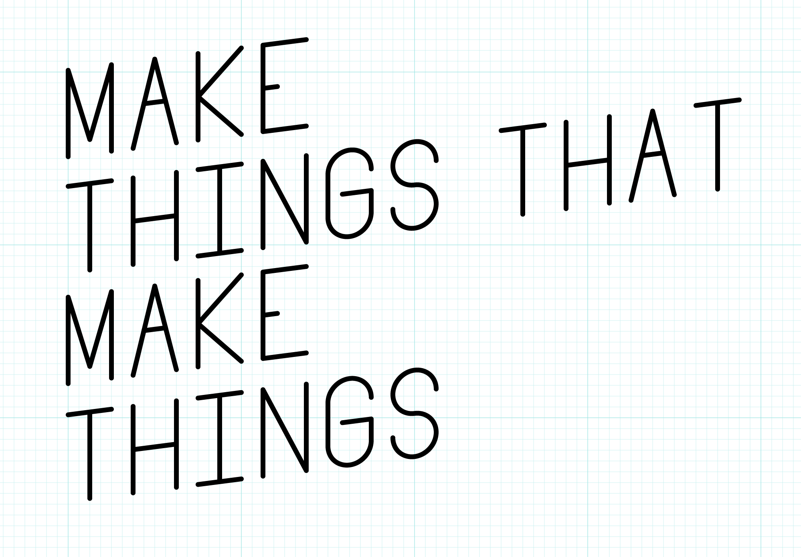

Introduction
Overview
Using a computer to explore aesthetics is a powerful creative process. This class explores a variety of tools and techniques for creating algorithmic images, generative art, parametric designs, and procedurally generated content.
Tools
p5.js + p5.dom
What Computational Form Is
Q: Can the computer substitute for the Designer?
A: Probably, in some special cases, but usually the computer is an aid to the Designer.
This is a class about computational form, algorithmic images, generative art, parametric design, and procedural generation. In this class, we will explore a creative process in which form is made by following defined processes. We will write instructions that a computer will follow to create images, animations, sounds, and sculptures.
We will make things that make things.
There are many reasons artists and designers employ algorithmic methods. Some important ones include:
- exploring new aesthetic
- automating complex tasks
- enhancing variety
- creating dynamic, responsive content


What Computational Form is Not
While we use computer programming throughout this class, it is important to understand that procedural generation doesn’t require a computer. Procedural generation is about defining instructions that create form. Computers are very useful tools for carrying out these instructions, but artists have also built systems that rely on humans or purpose-built machines instead. Many of the works included in the slideshow above embody principles of computation and instruction without using computers.
The Sierpinski Triangle
Draw a Sierpinski Triangle with pencil and paper.
The Sierpinski Triangle is a fractal. It is infinitely detailed and self-similar. There are many, many ways to generate a Sierpinski Triangle. The amazing Sierpinski triangle page to end most Sierpinski triangle pages details many of them. Here is another.
Instructions
Please take out a sheet of paper and pen and follow these instructions:
- Draw an up-pointing equilateral triangle that fills most of the page.
- Lightly mark the midpoint of each line of that triangle.
- Draw straight lines connecting each of those marks. This forms four new triangles: three that point up, one that points down.
- Choose any empty, up-pointing triangle on the page.
- Go to instruction 2.
Yes, these instructions will go on forever. I’ll interrupt you in a minute.
About this Class
In this class, we will make things that make things. We will explore a variety of programming languages, tools, and methods. We will create a variety of output: graphics, sounds, videos, animations, even 3D printed objects. The primary goals of this class are to introduce new ways of making and to encourage aesthetic investigation.

Along the way we’ll use a variety of programming languages and tools:
- Javascript
- p5.js
- paper.js
- OpenSCAD
- Vuo
We will also explore some interesting programming topics including:
- pseudo-random numbers
- Perlin noise
- composing strategies and tactics
- Markov chains
- alternative programming paradigms
- real-time vs prerendered animation
Who I am
I am Justin Bakse. I am an assistant professor of interaction design at Parsons. I am personally very interested in computational form and have used computational methods in a great deal of my work. You can see some of my work below or on my website.


Class Format + Homework
This class focuses on exploration. Each class introduces a new topic or tool, usually with an in-class workshop. Throughout the week you will be expected to create daily sketches/experiments related to that topic.
This emphasis on this class will be on personal exploration, learning to learn, and process rather than outcomes.

MFA Writing Assignment
As noted in the Syllabus, students in the MFA program must complete one extra assignment. BFA students are encouraged to also complete this assignment for extra credit.
In short this assignment is to choose a topic for further exploration, build a somewhat larger project, and write up a case study for the project. This assignment is intended to be flexibile, so feel free to propose your own spin.
You can complete this assignment at any time durring the semester. I suggest turning this in around midterms. Please discuss your general plan for your project with me before starting.
Notes on Daily Sketching
Your goal each day should be to explore a different aspect of the weekly theme. Ideally, you will spend 1 to 2 hours on an idea, resulting in an image or other artifact. Each day you will work on different ideas, possibly informed by something you did earlier in the week or class.
So I have to post something every single day?
The spirit of the assignment is daily practice + flexibility. Five posts a week that explore the weekly theme in a variety of ways is considered A work.
What if I miss a day?
That is fine, spend more time on another day and post twice.
Can I spend, say, 8 hours all on one day? Maybe I’ll pull an all-nighter.
Don’t do that. This process is about exploring different ideas. Spacing out your work gives you time to think. Creativity often comes in the space between actions.
What if I make something I like in 15 minutes?
Post it. Then keep working. Post again.
What if I work for a couple hours and don’t really like what I’ve made?
Post it. Then stop working. Try something different tomorrow.
1 to 2 hours is too short. Can I work longer?
If after an hour, you feel excited about what you are doing then keep working or make an in-progress post and build on it the next day. If you are frustrated, just post what you’ve got and move on.
Don’t ever put more than 2 hours into a frustrating sketch. Just post what you’ve got and start fresh on something else the next day.
If you find you often need more than an hour, you might be trying to make things that are too complex.
Can I post a work in progress and keep working on it tomorrow?
Yes. But don’t work on one thing the whole week. Sketch a variety of ideas each week.
I can’t decide what to work on today.
If you have more than one idea, just pick one at random. Don’t change your mind, just run with it. You are only investing an hour or two. If you have no ideas, review the class notes, do some Google image searches, be open to any idea that pops up. Just run with the first bad idea.
I can’t get whatever technology we are working on this week to work; my computer is broken; I missed class and I’m lost; I’m just lost this week. What should I do?
Post anyway. If you can’t do exactly what you want, find something close that you can do and do that. Focus on the themes rather than the technology. If the tech isn’t working use something else. Most weeks you could do pretty interesting projects, related to the weekly themes, without even using a computer.
I’m tired of looking at the computer screen? Can I do a couple of posts with paper/paint/glue/wood/whatever?
Absolutely. I highly recommend that you do! The more variety between your posts the better. If the work relates to the weekly topic, you can make it however you want.
What about in class work? Does that count?
Some weeks we’ll have time set aside in class to make something, some weeks we won’t. If we do start something in class, you can finish it after class and post it as one of your sketches.
Bottom line, how much time do I have to spend on these sketches?
90 minutes is ideal.
Don’t put more than 2 hours in on a sketch. If your sketch takes that long it is too complex or too difficult for your current skill level. It is okay to stop at 2 hours even if your sketch is broken. Post whatever you have. If you put in the work, you’ll get full marks for the sketch.
Don’t put in less than 45 minutes. Sometimes, you’ll make a really nice sketch pretty quickly. If that happens, post it! But keep exploring variations on your idea. If you often get done very quickly, you probably need to work on more challenging sketches.
Prerequisites
In this class, we will be exploring and creating projects in a variety of programming tools and languages. It is pretty likely that some of them will be completely new to you. To be comfortable in this class, you will need a foundation in a procedural programming language such as Javascript or Processing.
Coming into this class, you should:
- be able to create a coded drawing project in Javascript or Processing from scratch.
- understand the basics of a version control system such as git.
- be comfortable working in Adobe Illustrator and Photoshop.
- be comfortable capturing digital images with a camera and scanner.
That said, this class offers a good deal of flexibility. If you are not sure if you are ready for this class, please speak with me today to make a plan.
Every Class
- Be early + ready.
- Bring your computer, a sketchbook, a pencil, and a pen.
Original Work
All the work you submit for this class should be your own. For the most part you should create all the code, images, and writing used in your sketches yourself. In some cases it might make sense to incorporate something you didn’t make yourself, like a code library.
If your work builds on or includes anyone else’s work, make sure you cite it and give them credit!
Syllabus Review
Please review the syllabus here.
The Class Sketch Blog
Our class sketch blog will host your daily experiments and links to content of interest to the class.